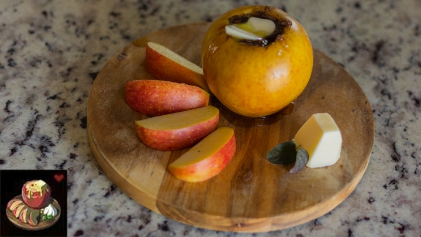

Hot Buttered Apple

Description
One of the simplest recipes from Breath of the Wild - all that Link needs are: an apple, and goat butter. This recipe from Sheikah Plate is a deliciously improved version of Link's first Baked Apple, perfect for the fall season.
Ingredients
- 2 apples of your favorite variety
- 1/4 cup brown sugar, unpacked
- 2 tablespoons butter, softened
- 1 teaspoon cinnamon
- 1/8 teaspoon nutmeg
- 1/8 teaspoon cloves
- 1/8 teaspoon allspice
- sprinkle of kosher salt
- 1 cup water
Steps
- Preheat the oven to 375F.
- Wash the apples thoroughly.
- Using a paring knife, cut around the core of the apple straight down, being sure to leave about 1/2-1 inch at the bottom of the apple. Take a small spoon and, gently as you can, scoop out the core, ensuring you remove all the seeds and leave about 1/2-1 inch at the bottom of the hole. You may simply use an apple corer if you have one.
- Mix together the softened butter, sugar, and spices until completely combined.
- Split the mixture in half and stuff each of the apples to the top of the hole. Sprinkle with kosher salt.
- Heat the water in a cup in the microwave, or even on the stove, until boiling.
- Place the apples in an oven-safe container and pour the boiling water at the bottom.
- Bake for 30ish minutes, or until the apples are the correct “doneness” for your tastes. You may check this by squeezing them gently, but be careful not to burn yourself.
- Take them out of the oven, allow them to cool slightly, and serve. If your apples are a bit stiffer you may want to slice them and allow the sauce to drizzle over each piece. If yours are softer, simply serve with a spoon.